스킬 시스템 및 스킬 툴 (진행중)
Stat(스탯, 능력치) 구현
❓구현이유
위에서 만든 IdentifiedObject를 상속받아 Stat이라는 데이터를 객체화하기 위해서 제작하였습니다.
>
❓기능
Stat은 Stat, StatOverride, Stats로 구분이 되며
Stats는 Stat들을 관리하고 StatOverride는 Stat_HP, Stat_MP 이런식으로 각 Stat이 늘어나갈 때마다, Stat_Mage_HP, Stat_Mage_MP로 확장하는게 아니라 값을 덮어 쓰기 위한 용도로 만들었습니다.
>
🧑💻 결과물
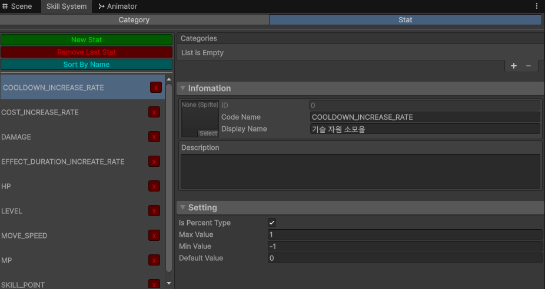
커스텀한 에디터상에 Stats가 관리하는 Stat목록들을 띄운 화면입니다.
>
📜클래스 구조 도식화
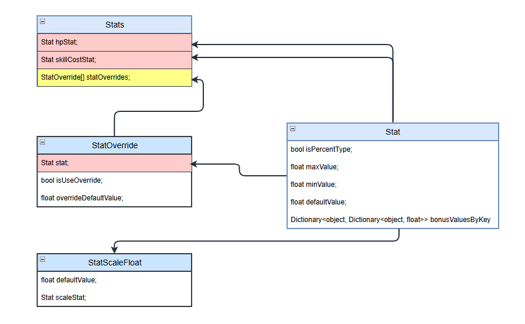
📜구조 도식화
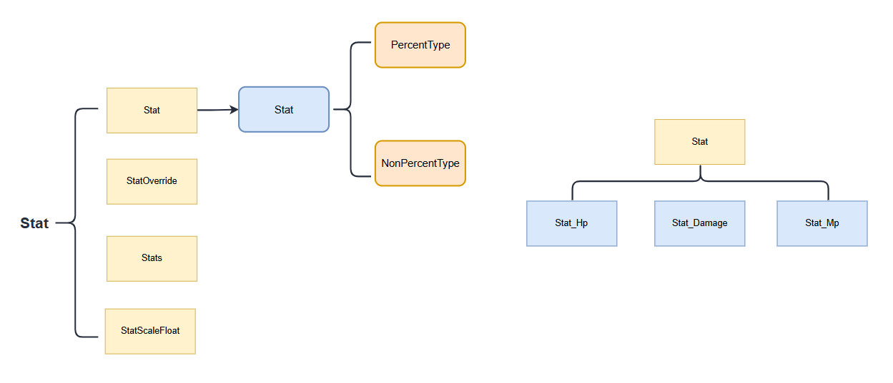
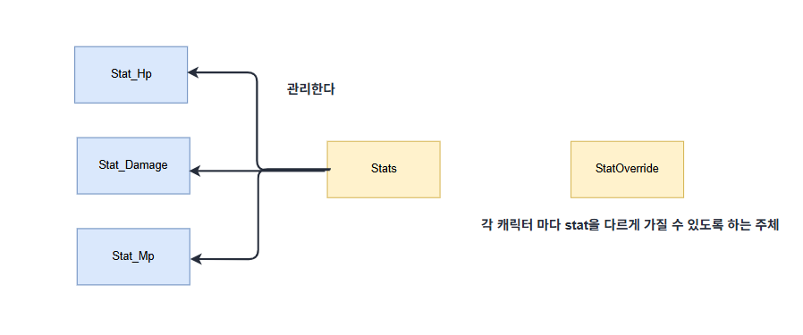
📜기능 로직 순서 도식화
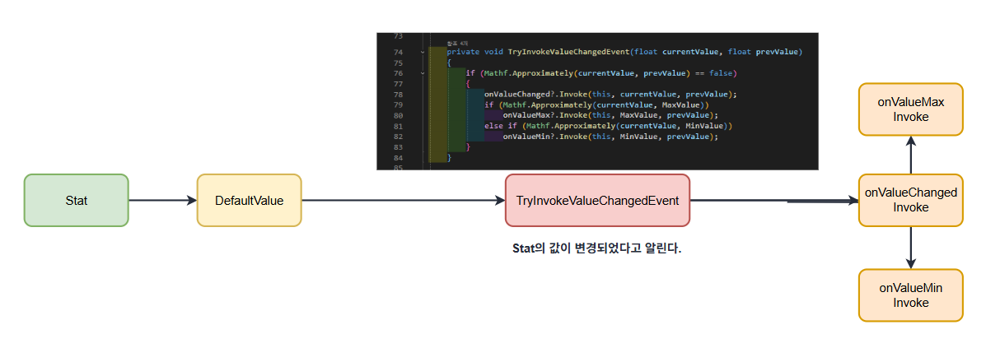
Stat의 특정 값이 변경되면 위 로직 흐름대로 값이 변경되고 delegate로 알려주는 작업을 수행합니다.
>
✏️Code
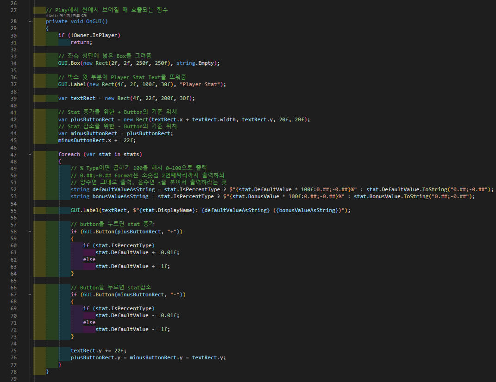
Stats.cs : Stats가 관리하는 Stat들에 대한 정보를 씬에 그려주는 함수입니다.
>
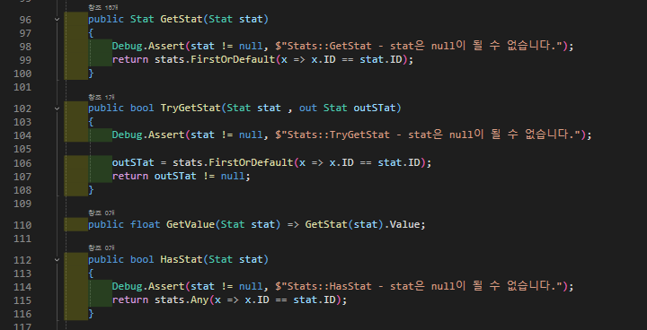
Stats.cs : Stats가 관리하는 Stat들을 편하게 가져올 수 있도록 하는 각종 유틸함수들입니다.
>
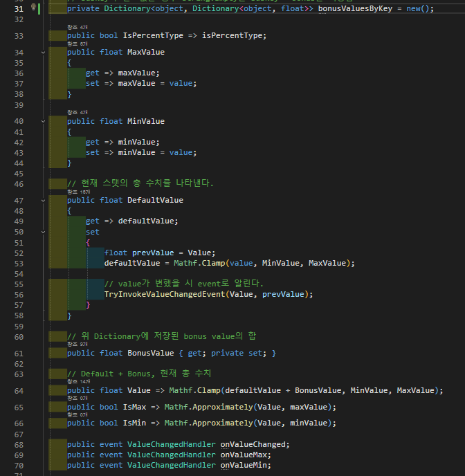
Stat.cs : 스탯이라는 데이터의 min/max값을 정의하고 보너스 벨류를 두어 총합을 계산하는 DefaultValue를 정의하였습니다.
>
State FSM(상태에 대한 유한 상태 기계 구현)
🧑💻결과물

이동과 구르기, Stat_HP 조절로 죽음과 부활을 FSM으로 구현한 결과물입니다.
>
❓구현이유
어떤 상태를 추상화된 개념을 관리할 때 if, switch문을 통해서 관리하는 것이 아니라 구체적인 객체로 나타내어 유연성과 확장성을 가질 수 있게 하기 위해 State라는 것을 FSM으로 구현하였습니다.
>
🧑💻설명
State(상태)끼리는 전이(Transition)이 발생할 수 있고 상태끼리 전이가 발생하는 과정을 StateMachine이 관리할 수 있도록 하였습니다.
>
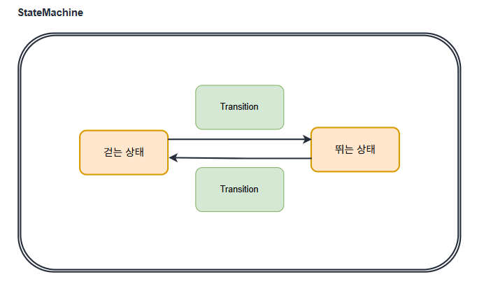
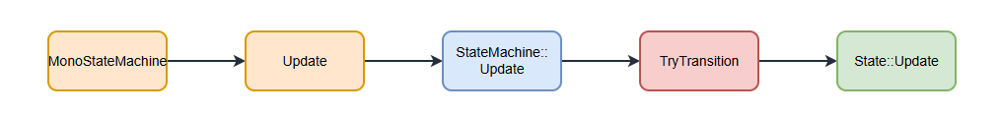
✏️결과
각 상태에 따라 if → update → 전이 → 뛰는 상태 if → update → 전이 이런식의 if문이 들어가는 코드가 아닌 각 상태는 각자의 역할만 수행할 수 있도록 구조가 잡히게 되었고 유연성이 확보되었습니다.
>
📜클래스 구조 도식화
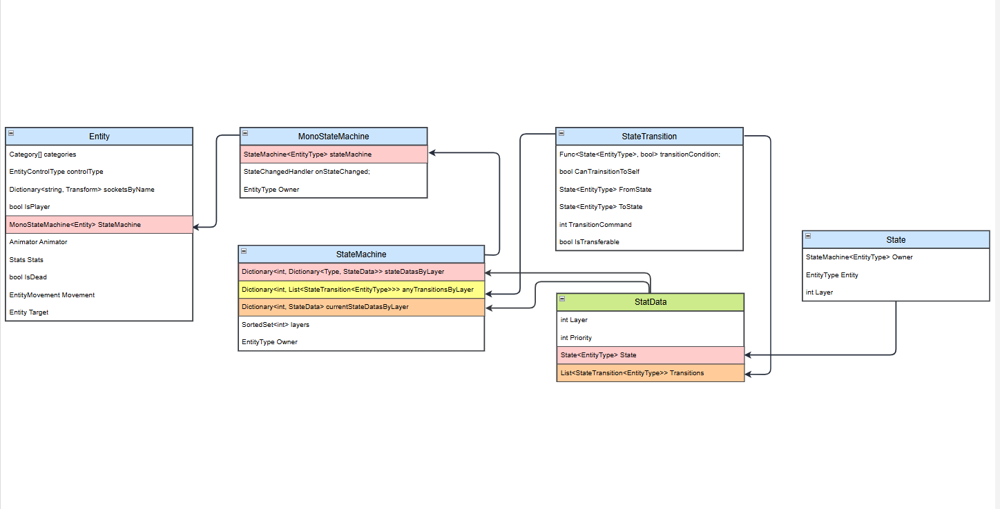
클래스간 포함관계를 도식화 하였습니다.
Entity라는 객체(Player, Monster 등)가 MonoStateMachine을 가지고 있고, MonoStateMachine이 StateMachine의 Update를 호출하여 상태를 제어합니다.
>
- Entity : MonoStateMachine을 담고 있는 본체 클래스 입니다.
- MonoStateMachine : StateMachine을 제어하는 객체입니다.
- StateMachine : State, StateTransition을 제어하는 객체입니다.
- StateTransition : 전이(변화)를 담당하는 객체입니다.
- StateData : 상태라는 것이 가질 수 있는 데이터를 나타내는 객체입니다.
- State : 상태를 나타내는 객체입니다.
📜State 구조 도식화
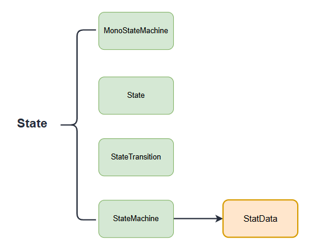
상태를 FSM으로 구현하기 위해 제작된 클래스들입니다.
>
✏️Code
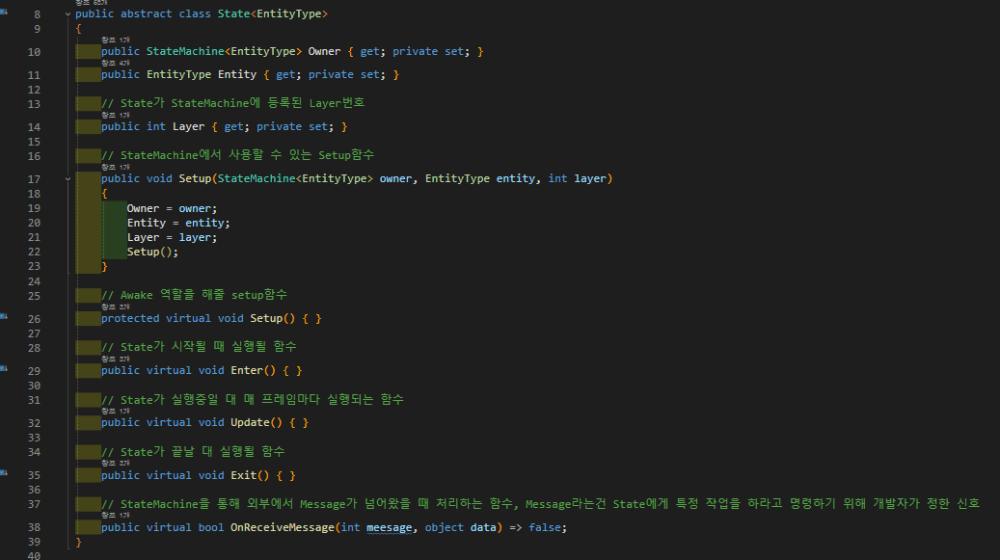
상태라는 추상화된 개념을 객체화한 클래스입니다.
추상클래스로 제작하였으며, 해당 클래스를 상속받아 State_Idle과 같은 작업을 할 수 있도록 하였습니다.
>
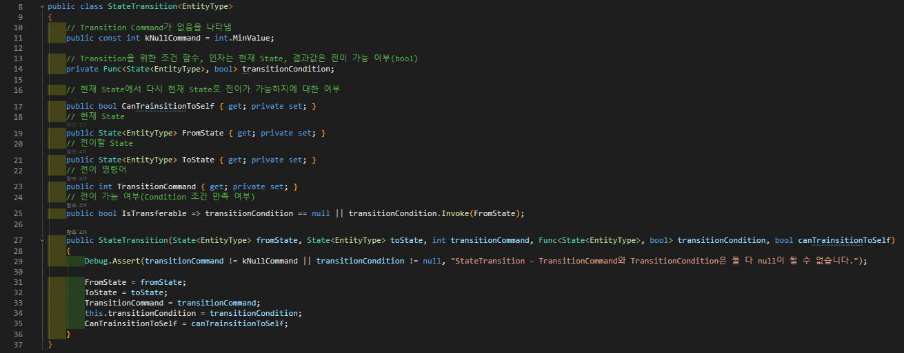
전이(Transition)이라는 추상화된 개념을 객체화하였습니다.
각 상태는 전이라는 개념을 가지고 어던 조건에서 어떤 상태로 넘어갈 수 있는지를 나타내는 클래스입니다.
>
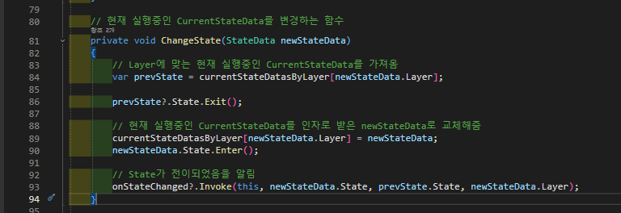
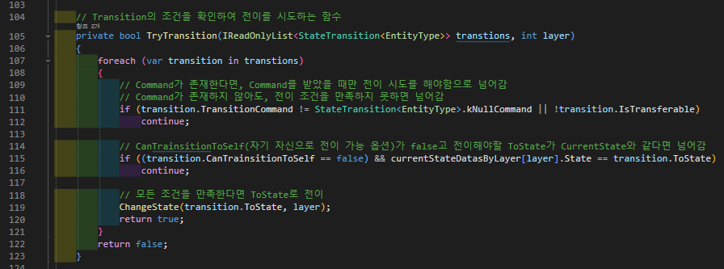
StateMachine.cs : 스테이트 머신의 코드들입니다.
실제 상태를 전환(ChangeState)하고 상태가 변경(전이)될 수 있는지(TryTransition)를 구현한 코드입니다.
>
Effect 구현 (+Stack 처리)
❓구현이유
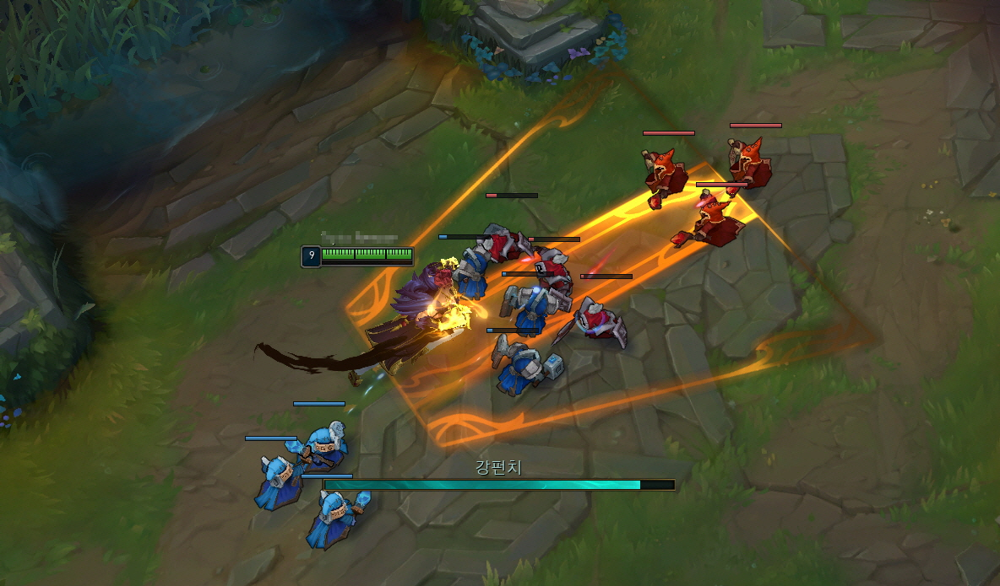
(이미지는 예시입니다)
Skill이라는 객체에 Effect를 만들지 않고 유연성과 확장성을 위해 Skill과 분리하여 Effect라는 것에 대한 구조를 구현하고 클래스들을 구현하였습니다.
>
🧑💻구현결과
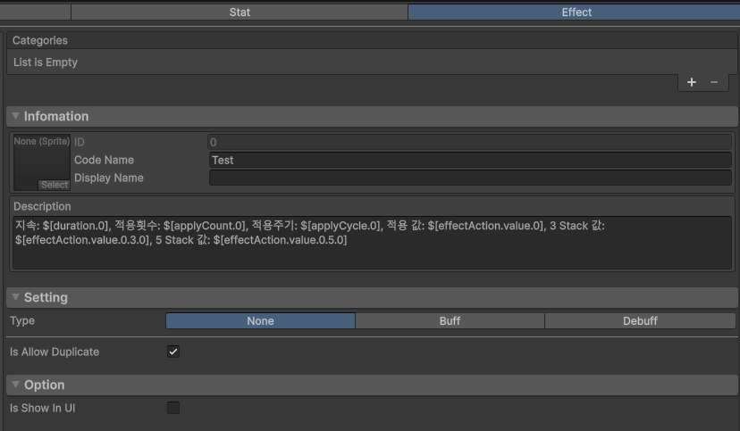
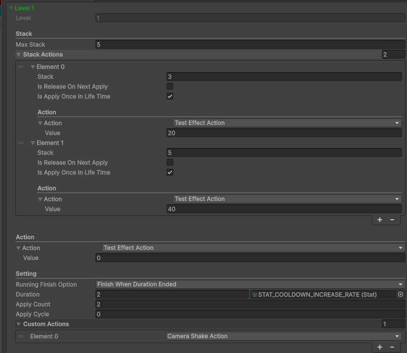
유니티 에디터를 커스텀하여 직접 제작한 EffectData를 보여주는 결과 화면입니다.
>
📜클래스 구조 도식화
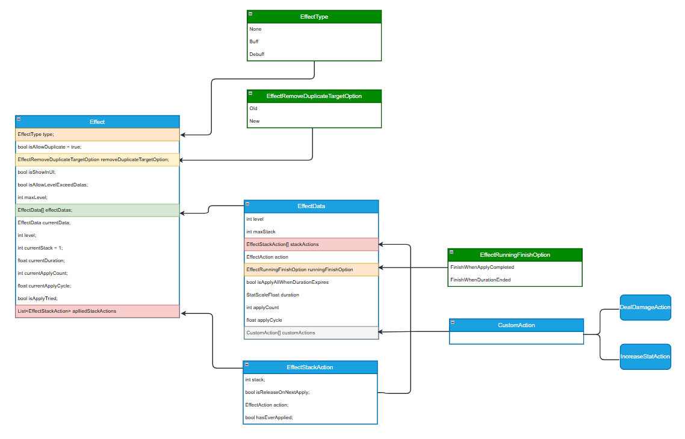
파란색은 클래스, 초록색은 Enum타입입니다.
각 클래스 별로 포함관계를 정의하고 클래스의 멤버 변수가 Enum이라는 것을 명시하였습니다.
>
- Effect.cs : 실제 효과(Effect)를 나타내는 객체입니다.
- EffectData.cs : 효과가 가지는 데이터를 정의한 클래스입니다.
- EffectStackAction.cs : 효과에 스택이 쌓일 때마다 발생하는 것을 정의한 클래스입니다.
- CustomAction.cs : 효과가 발생하고 이에 따른 연출을 표현하기 위한 클래스입니다.
📜Stack 적용 도식화
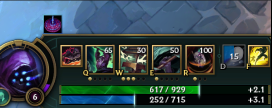
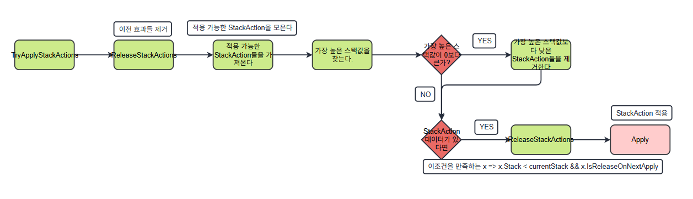
예시) 잭스 스킬 쿵쿵따 스킬의 경우 스택 마다 데미지가 달라지는데 해당 로직을 도식화 하였습니다.
>
✏️Code
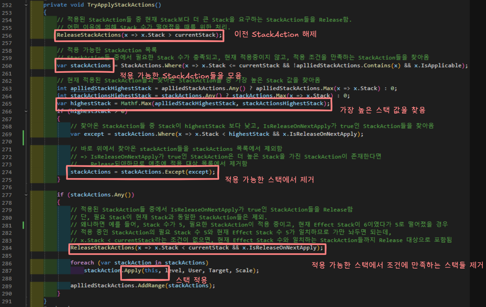
Effect.cs : Stack적용을 하는 코드입니다.
>
TargetSearch 구현
❓구현이유
단순이 충돌체를 통해 찾는 방법, B라는 방법을 통해 찾는방법으로 코드를 들려나가는 것이 아닌 찾는 방법을 두가지로 쪼개에 기준점을 잡는 클래스, 기준점을 바탕으로 실객체를 찾는 클래스로 나누어 모듈화를 통해 보다 확장성 있게 타겟을 찾는 방법을 만들기 위하여 구현하였습니다.
>
✏️기능설명
타겟을 찾기전 기준점을 잡아주는 TargetSelectionAction, 찾은 기준점을 바탕으로 실제 타겟들을 찾는 TargetSearchAction두 큰 클래스로 나누어 모듈화를 할 수 있도록 하였습니다.
필요한 기능들을 해당 두 클래스를 상속받아 각자의 기능을 구현할 수 있도록 하였습니다.
>
🧑💻결과
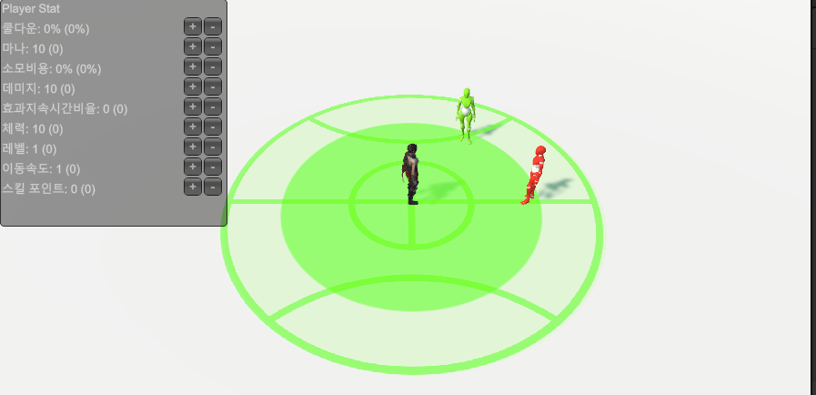
색이 칠해진 범위 안에 타겟들이 있는지를 마우스 클릭으로 찾을 수 있는 타겟 검색 방법
>
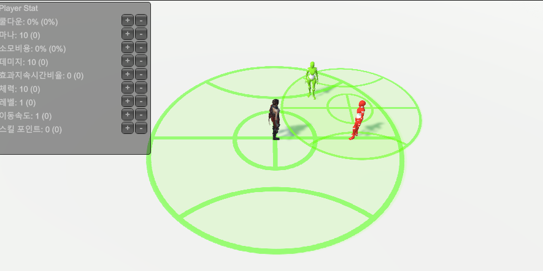
특정 범위안에 있는 타겟들을 검색할 수 있는 방법
>
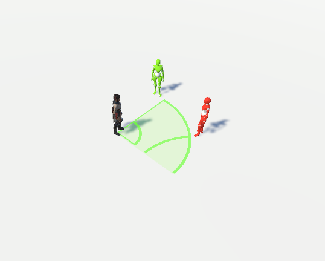
부채꼴 범위안에 있는 타겟들만 검색할 수 있는 방법
>
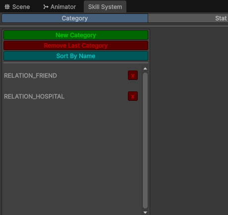
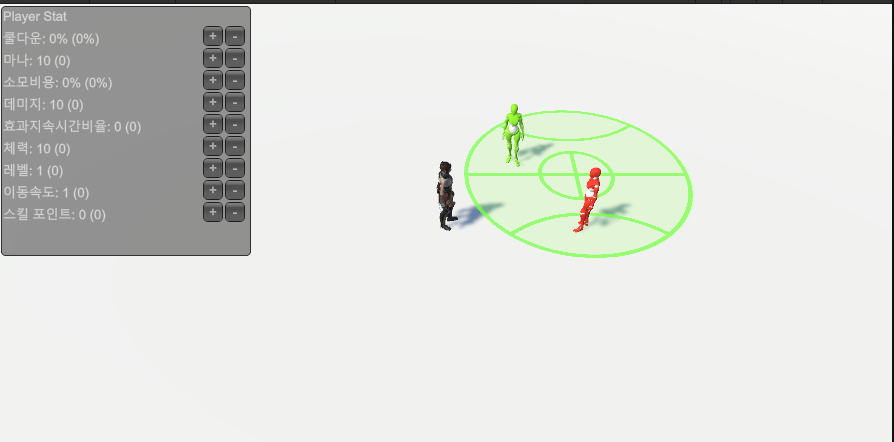
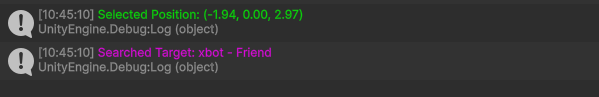
Player와 초로색(아군)에게 직접 만든 RELATION_FRIEND카테고리를 설정, 빨간색(적군)에게는 RELATION_HOSPITAL카테고리를 넣어 같은 카테고리만 가진 타겟을 검출한 결과입니다.
>
📜클래스 도식화
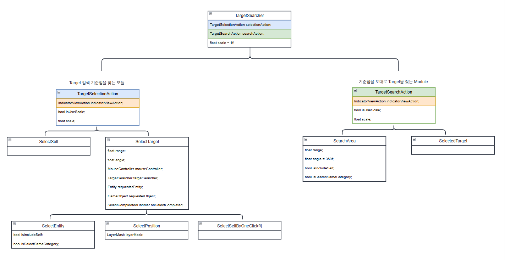
타겟을 검색하는 클래스들을 나누어 모듈화할 수 있도록 구조를 잡은것을 도식화 하였습니다.
>
📜로직 도식화
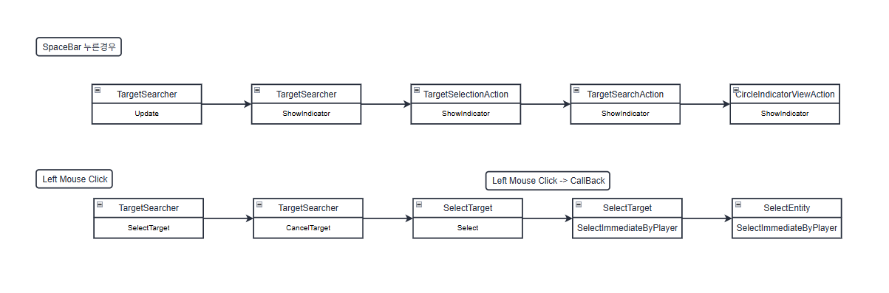
✏️Code
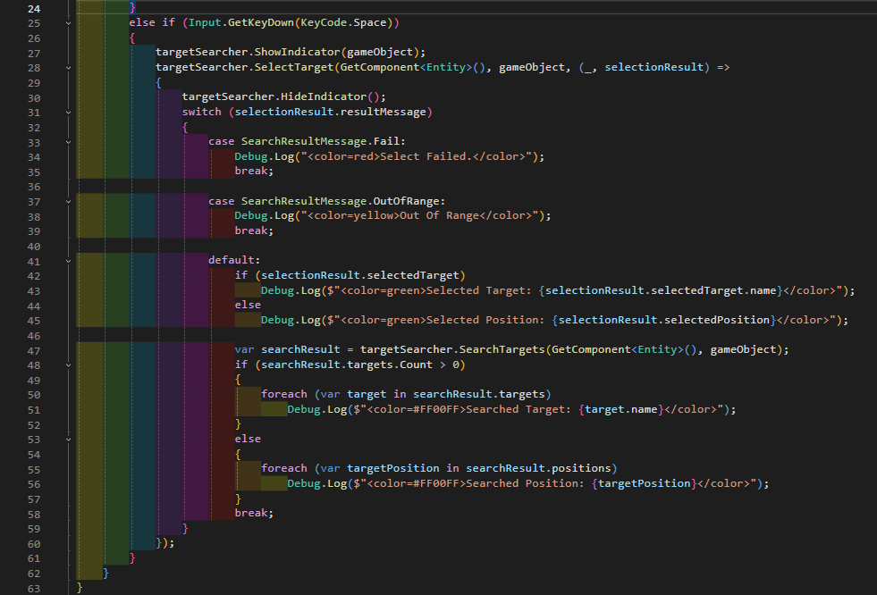
SpaceBar를 누르면 동작하는 코드입니다.
누르면 TargetSelectAction이라는 모듈이 런타임시 설정한 값(기준점이 플레이어 기준인지 다른 기준으로 기준점을 잡는지 등에 대한 설정)에 따라 기준점을 잡고
TargetSearchAction이라는 모듈을 통해 탐색을 수행합니다.
해당 코드가 호출되는 타이밍은 마우스 클릭시 콜백함수로 호출타이밍을 받습니다.
>
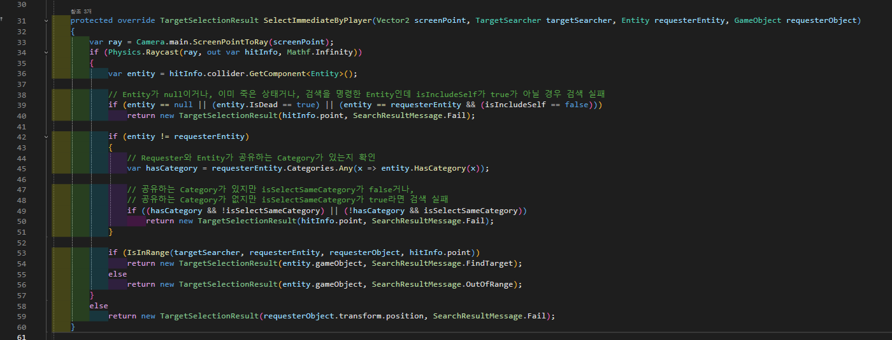
TargetSelectAction이라는 모듈이 수행하는 코드입니다.
특정 기준점을 대상으로 범위안에 타겟이 있는지 없는지 검사하고 반환하는 코드입니다.
>
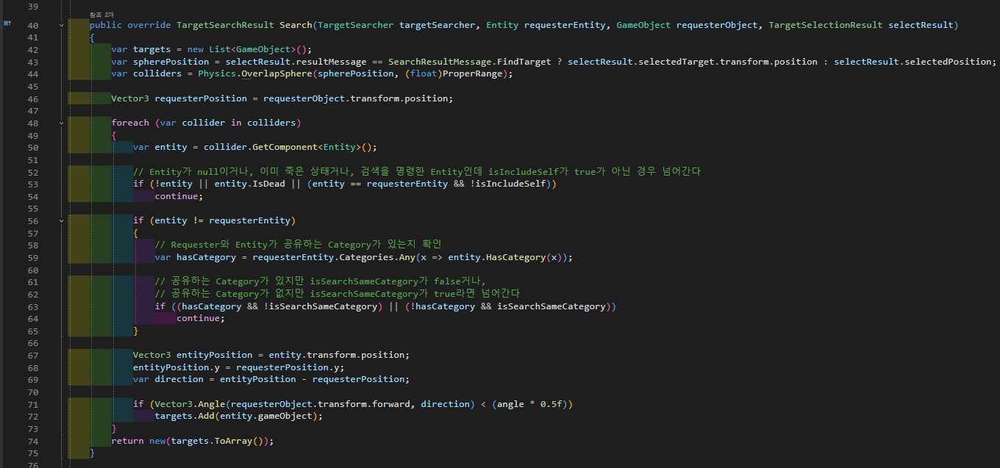
TargetSearhAction이라는 모듈이 기준점을 대상으로 타겟을 찾는 코드입니다.
찾은 타겟들을 배열에 담아 return하는 코드입니다.
이때 같은 카테고리를 가지고 있다면 해당 타겟을 targets배열에 담습니다.
>